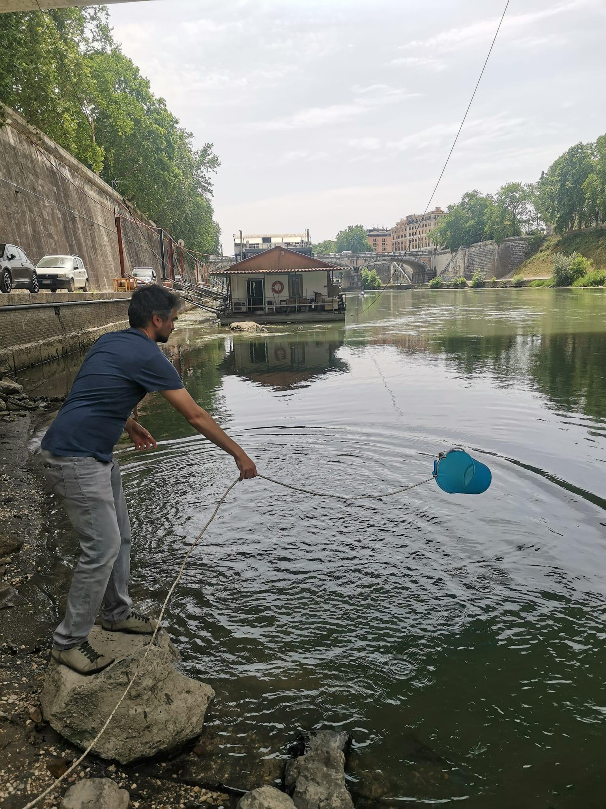

Il monitoraggio delle acque: il caso di Tevere e Aniene
Premesso dunque che all’interno della pubblicazione tecnica del progetto sono specificati i protocolli messi in pratica per l’analisi di Tevere e Aniene, in questa sezione verranno illustrate praticamente le azioni da mettere in campo per andare a monitorare la qualità dell’acqua dei fiumi.
Le analisi che possono essere svolte per mezzo di strumenti di facile utilizzo e che sono state svolte sul Tevere e sull’Aniene riguardano la misura di: pH, temperatura, torbidità, conducibilità, nitrati, fosfati, ammoniaca, Escherichia coli. Si tratta di parametri che permettono di avere un’indicazione sullo stato della qualità del corso d’acqua. Alcuni di questi parametri, corrispondono a quelli che vengono monitorati dagli enti di controllo (ARPA) per definire il buono stato ecologico delle acque dolci secondo la direttiva WFD 2000/60/EU recepita e attuata dal D. LGS 152/2006 e successive modifiche.
Cosa dice la legislazione a riguardo?
Alcuni contaminanti sono considerati dalle normative e per essi possono essere definiti dei limiti, per esempio per lo scarico nei corpi idrici superficiali o per la presenza nelle acque in relazione alla loro destinazione d’uso. Per altri sono in corso studi atti a stimare il rischio ambientale posto dai loro residui nei diversi comparti ambientali, sulla base dei quali si valuterà se devono essere fissati limiti specifici a maggior tutela dell’ambiente e della salute dell’uomo.
In Italia, fino all’abrogazione del D.lgs. 152/1999, l’indice base di riferimento per i parametri chimico-fisici era il LIM, Livello di Inquinamento da Macrodescrittori, costituito da sette macrodescrittori (ossigeno disciolto, domanda biochimica di ossigeno o BOD, domanda chimica di ossigeno o COD, azoto ammoniacale o ammonio, azoto nitrico, fosforo totale ed Escherichia coli). Per ciascun parametro, indicatore delle pressioni ambientali, veniva individuato un livello di inquinamento e un corrispondente punteggio numerico. Sommando i punteggi dei sette macrodescrittori si otteneva il LIM, che poteva appartenere a una di queste cinque classi (1 = Elevato, 2 = Buono, 3 = Sufficiente, 4 = Scarso, 5 = Cattivo).
In aggiunta ai parametri base del LIM, il D.Lgs 30/2009 definiva i valori soglia di una lunga lista di microinquinanti chimici (parametri addizionali) come ad esempio metalli pesanti, composti organo-alogenati e fitofarmaci.
Con IL DM 260 del 08 novembre 2010 è stato introdotto l’indice per il Livello di Inquinamento espresso dai Macrodescrittori per lo stato ecologico - LIMeco, costituito da soli quattro parametri relativi allo stato trofico: ossigeno disciolto (OD) e nutrienti tra cui ammonio, azoto nitrico e fosforo totale (NH4, NO3, Pto). Anche in questo caso esistono cinque classi di qualità: cattivo, scarso, sufficiente, buono, elevato. Con il LIMeco, oltre al BOD e COD è stato quindi eliminato anche il macrodescrittore microbiologico Escherichia coli. Tale descrittore è un importante indicatore per rilevare impatti dovuti a scarichi fognari non sempre evidenziati dagli altri parametri che costituiscono il LIMeco. Queste sorgenti puntiformi, come ad esempio gli scolmatori, sono numerose in tutto il territorio, ma sono soggette a pochi controlli nella direttiva acque WFD 2000/60/UE.
Come si procede?
Procedimento per la raccolta del campione
Recarsi nel punto di campionamento definito. I punti vengono scelti da cittadini e dai referenti scientifici in base alle caratteristiche del fiume, degli eventuali punti di criticità evidenziati dai cittadini in base alle osservazioni da loro condotte, seguendo dei criteri specifici: la distanza pressoché simile tra i vari punti di campionamento. Una volta scelti i punti, ci si reca nel punto selezionato e si preleva per mezzo di un secchio dell’acqua dal fiume facendo attenzione a non prelevare vegetazione e tirando il secchio il più lontano possibile dalla riva (ci si può aiutare con una corda). Sciacquare il secchio per tre volte. In questo modo eventuali residui contenuti nel secchio saranno rimossi. La quarta volta prelevare l’acqua. Se ce ne fosse la possibilità sarebbe più opportuno prelevare l’acqua nel centro del fiume in modo tale da avere un campione più rappresentativo della qualità dell’acqua del fiume e non delle rive che possono essere più stagnanti e sensibili alle interferenze.
